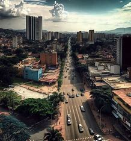
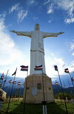
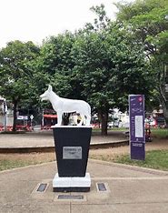

Galería de Imágenes



Lugares de Interés
Explora sitios turísticos como el Cristo Rey.
Planes por Estación
Actividades recomendadas según la época del año.
Cultura y Tradiciones
Historia y costumbres de la región.
Mapa de Cali
Ubicación de los principales puntos de interés.